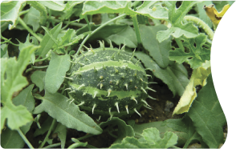

знай наших в лицо
попробуйте угадать, какому из обычных культурных растений приходится родственником дикий вид на картинке.
дикий родственник
культурное растение
-

- 
-

Замечательно, вы заслужили морковку!